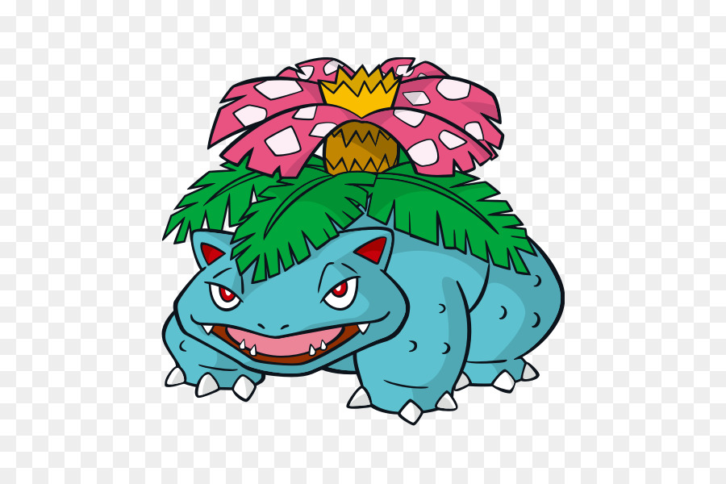

Características
Etimología
Su nombre es una combinación de las palabras Venus (una flor parecida a la planta que le crece desde su etapa como Bulbasaur) y saur, que viene del griego saurus, que quiere decir reptil o lagarto y es el equivalente a la terminación -saurio en los nombres de muchos dinosaurios. Así, Venusaur podría traducirse como Venusaurio. Ilust. 2004 Su nombre japonés, Fushigibana, proviene de 不思議花 (significa flor Ilust. 1996 extraña). Mantiene como Ivysaur y Bulbasaur la referencia a lo extraños Nacional que pueden resultar, ya que son los primeros Pokémon de la Pokédex Nacional. 003 Ivysaur Johto Su nombre francés, Florizarre, proviene de las palabras fleur (flor) y bizarre (extraño), influenciado por el nombre japonés.
Biología
El capullo de su lomo se abre semejantes a las de palmera o las de la Rafflesia arnoldii, que se nutre de la luz solar por fotosíntesis, aunque también absorbe energía del propio Pokémon. A través de ella, realiza uno de sus ataques más potentes: rayo solar. Esta planta segrega una savia muy dulce que atrae a muchos Pokémon bicho. Venusaur tiene la habilidad de liberar un aroma dulce que puede tranquilizar a los demás Pokémon. También tiene la capacidad de atraer a muchos Pokémon del bosque. Los Venusaur son muy longevos y cuando alcanzan una larga edad, el aroma que sale de su flor es tan potente que puede hacer florecer los bosques y hacer retoñar a los árboles secos. Se dice que esta habilidad la usan para darle inicio a la primavera. Además, es capaz de manipular objetos con gran precisión gracias a las cepas que salen de su cuerpo.
General
Peso 100,0 kg Altura 2,0 m Grupos huevo: Monstruo Planta Género: 87,5% Macho 12,5% Hembra Hábitat: Pradera Color: Verde Generación: Primera